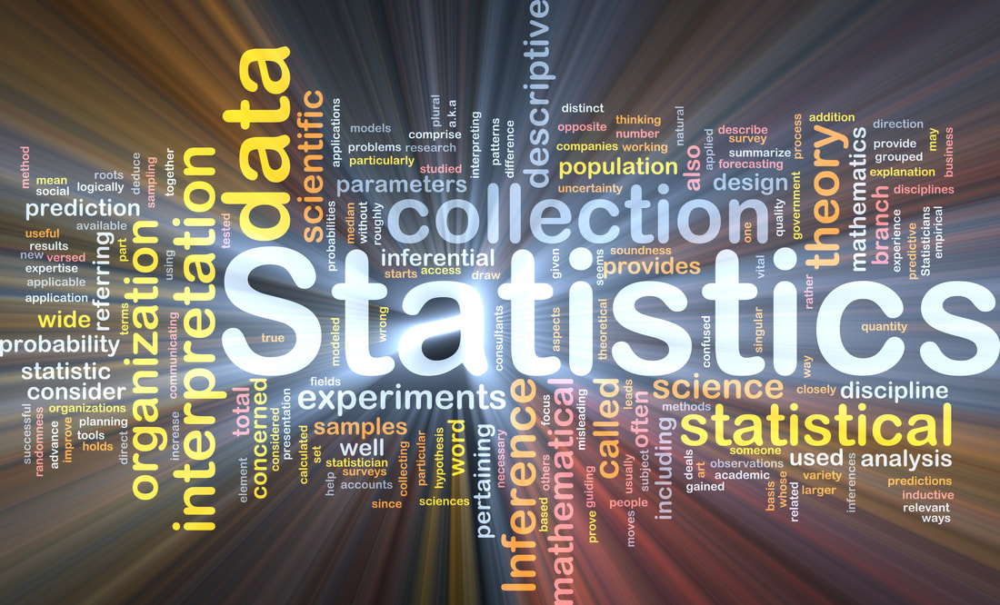

Calculus
Alg.& Geo.& Trig.
Statistics
*Statistics:
First CollectiSon
Second Collection
*Others:
Fractions and Mixed Numbers
SAT Math
How To Graph Equations
Logarithms Review
Polynomial Functions Graphing
Graph Sine & Cosine Functions
Transformations of Functions
Solving Logarithmic Equations